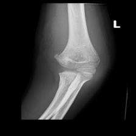

Deep learning uses powerful computers and large datasets to recognize patterns, especially in tasks related to images. One key method in deep learning is Supervised Learning. Here, the system learns from data with known labels and then uses this knowledge to identify new, unknown data.
Medical datasets are small, which leads to overfitting, where a model learns the training data too closely and fails to generalise. One solution to overcome overfitting is through Data Augmentation (DA). DA makes small datasets more versatile by creating new data points that are consistent with the original ones. Another is through Transfer Learning (TL), which applies insights from one model to another. Additionally, several advanced network designs, like ConvNeXt, DenseNet, EffNet, and ResNet, have been developed to help in visual tasks.
In the contemporary literature, many researchers are looking at ways to expand dataset sizes rather than finding the perfect system design for smaller datasets. This lead to our research questions:
Which deep learning design is best for classifying multiple labels on small medical datasets?
Can Data Augmentation improve the use of small medical datasets?
Is "cross-domain Transfer Learning" useful when applying deep learning models to medical data?
Methods and Experiments
In our research, we looked into classifying multiple labels in computer vision using images of Neck and Elbow X-rays. We tested five design approaches: ConvNeXt, SwinTransformerv2, DenseNet, EfficientNetv2, and ResNet.
For data improvement, we tried four techniques: not using any, Random Cropping, Rand Aug, and Neural Aug. Plus, we evaluated the performance with and without Transfer Learning for each dataset. In total, we reviewed 240 different model combinations.
We used medical images given by Dr. Kruger from the Groote Schuur Hospital, processed them, and the models then predicted labels. We formulated a multi-label classification problem where a prediction was considered successful only if it matched exactly with the true label, due to the high importance of accuracy in medical imaging. This led to our detailed Experiments table below:
Experiment
Methods
Variables
Datasets
Research Question
DL model architecture selection
ConvNeXt, Swin-Tv2, DenseNet, EffNetv2, ResNet
Parameter count, TL method, DA method
Elbow and Neck
Q1
DA method selection
Random Crop, Rand Aug, Neural Aug, No DA
Model architecture, TL method
Elbow and Neck
Q2
TL method selection
ImageNet-1K pre-training, No TL
Model architecture, No DA
Elbow and Neck
Q3
Table 1: Experiment Design
We employ the following hyperparameters during training. Each of which was tuned manually:
Hyperparameter
Value
Activation Function
Sigmoid, ReLU
Cost Function
Binary Cross Entropy
Learning Rate
1 × 10−3
Weight Decay
1 × 10−4 /10 steps
Optimizer
Adam
Epochs
15-TL, 30-No TL
Batch Size
32
Image Size
224x224
Training Callbacks
Early Stopping, Normalization
Table 2: Hyperparameters values
For Transfer Learning we use weights initialized on ImageNet-1K. For Data Augmentation, we use methods advised as proposed by their respective original paper implementations. See below for a demo of the effects of the different DA styles!

→
Results and Conclusions
We conducted comprehensive research to find the best ways to analyze medical images. Among the many designs tested, the ConvNeXt stood out as the most effective. We also found that the Neural Augment technique was highly beneficial in improving our data usage, and Transfer Learning proved essential for accurate image classification.
One challenge we faced was ensuring our data was balanced. Having a mix of various types of images was more critical than merely having lots of images. To address this, we introduced a method called "Default Validation." In simple terms, this method ensures images are labeled correctly based on what's detected in them.
The prediction should indicate ’normal’ if no pathogens are identified in an image, and the ’normal’ label should be excluded if one or more pathogens are identified in an image.
Here's a brief look at how Default Validation works:
Algorithm 1 Default Validation:
1: for prediction in predictions do
2: if all(prediction[:-1] == 0) then
3: prediction[-1] ← 1
4: else
5: prediction[-1] ← 0
6: end if
7: end for
Thanks to this method, our models became more accurate by between 1.6% and 6.9%. The following are our top models in terms of Exact Match Ratio:
Elbow Images:
Model
Test Accuracy
ConvNeXt-B with TL and Neural Aug
30.00
(Baseline) ConvNeXt-B with No TL and No DA
9.38
Neck Images:
Model
Test Accuracy
DenseNet121 with TL and Neural Aug
48.44
(Baseline) DensetNet121 with No TL and No DA
39.06
Future Work
The study highlights areas where more research can be done. This includes looking into more methods for data augmentation and finding ways to address uneven data samples. Transfer learning has been helpful, but it might be even better if we learn from models focused on medical data. There's also potential to improve our current validation method by making a smarter system that can precisely analyze medical images.